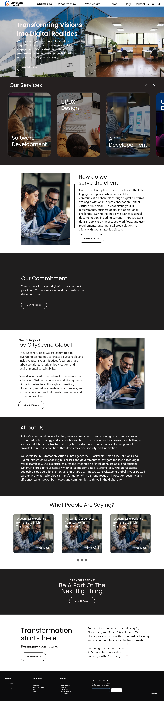

Work category 01
UI/UX Design
Landing pages and digital interfaces designed to feel clear, engaging, and easy to navigate.

Concept Landing Page
KNOB Mechanical Keyboard
A product-first landing page concept designed for a mechanical keyboard brand. The layout uses strong hierarchy, bold headlines, and focused product sections to make the interface feel both premium and performance-driven.
Open project
Website Landing Page
CityScene Home Page
A structured homepage designed for CityScene with a service-led layout, informative content blocks, and clear scanning flow. The design balances business credibility with approachable navigation to guide users through the brand story.
Open project